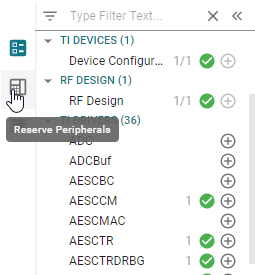
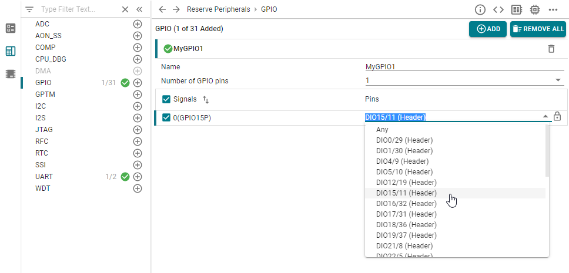
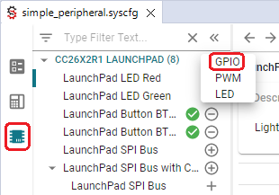
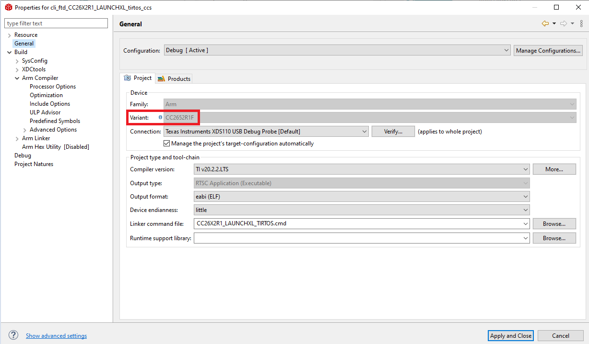
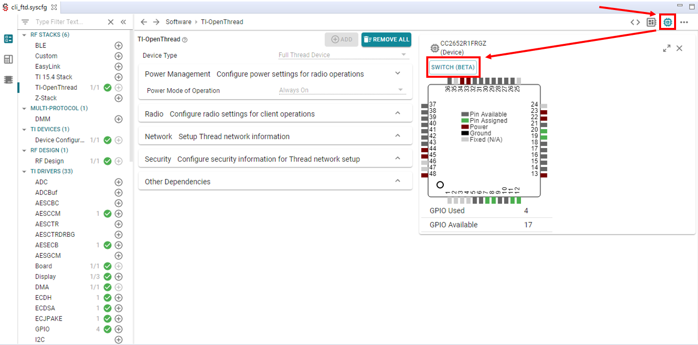
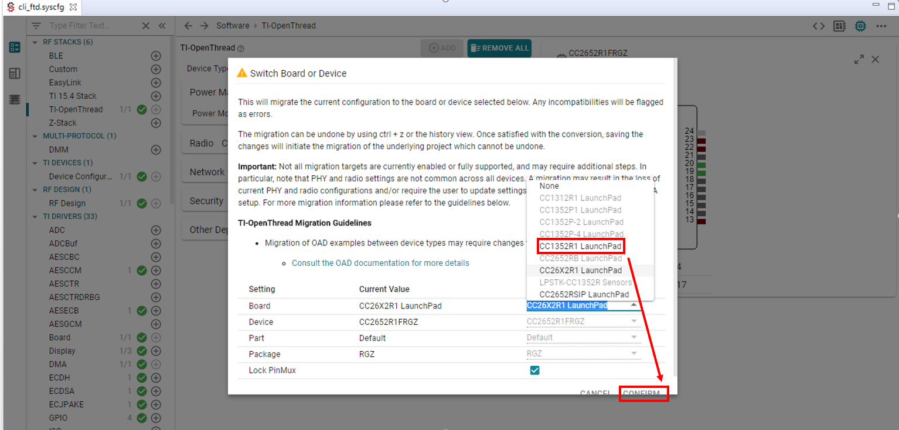
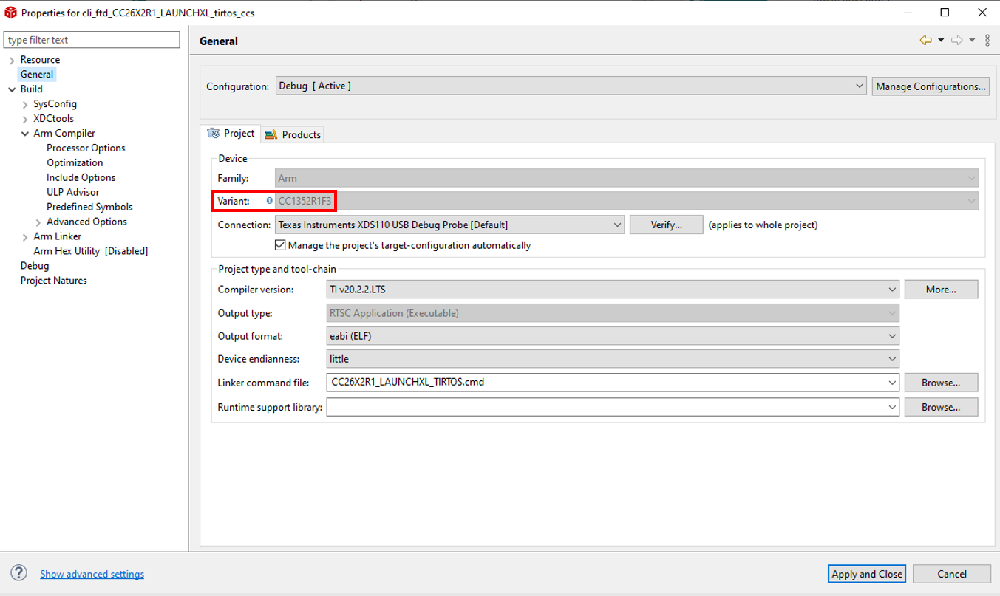

Configure The Board Files with SysConfig¶
The board view shows you what pins are available on your board, and what peripherals are assigned to what pins. Hover over each pin for more information.
Enabled and configured peripherals are displayed with a green symbols. To add a new peripheral, press the plus sign next to the peripheral type. The “Show generated files” tab lets you see the files generated based on SysConfig. Generated files are dynamically updated every time you make a change in SysConfig. When you build your project, the generated files are exported into the output folder of your project.
Reserve Peripheral(s)¶
Certain use cases may require preventing SysConfig from generating the configurationof specific peripherals.
Examples of use cases requiring to reserve peripherals are:
dynamic re-configuration of a peripheral
leveraging the Sensor Controller (on devices enabling it)
already handling certain peripherals configuration
with hardware constraints preventing to use certain peripherals (typically GPIOs)
peripherals reserved for future use
Below are the steps required to utilize the Reserve Peripherals feature.
Open the
.syscfgfile using the SysConfig GUIOpen the panel “Reserve Peripherals”
Reserve the resources
Figure 64. Reserve a peripheral using SysConfig. This image shows how to reserve DIO 15.¶
SysConfig ensures no resource conflict occurs. In case no solution can be found, an error is raised.
Hardware View¶
The Hardware view may be used to add software modules for supporting hardware resources on EVMs or LaunchPads. The same capability could be done in the Software view by adding a hardware. However the Hardware view provides a hardware-first perspective to show which software could be used with hardware resources.
Figure 65. Sysconfig Hardware View¶
SimpleLink Academy also contains a SysConfig training module for most of the platform SDKs in the Tools folder.
Migrating Board Variant¶
Sysconfig may also be used to migrate a given project from one board to another compatible board.
Note
Note that this is a Beta release for the SimpleLink CC13xx/CC26xx SDK.
Attention
Not all migration targets are currently enabled or fully supported, and may require additional steps. In particular, note that PHY and radio settings are not common across all devices. A migration may result in the loss of current PHY and radio configurations and/or require the user to update settings such as RF commands and high PA setup. For more migration information please refer to the guidelines shown in step 3.
Here are the steps:
Check the current device variant, by right-clicking on the project, then select “Properties”. Now, you can see the device variant as shown here:
Figure 66. Original Device Variant¶
Open the project’s .syscfg file, navigate to Device view, then click “SWITCH”.
Figure 67. Sysconfig Device View¶
The guidelines for migration on your specific project will be shown, and may differ from the screenshot. Please consider the guidelines while using this migration feature. Now, select a compatible device for migration, click “CONFIRM”, and ctrl-s to save the .syscfg file.
Figure 68. Select Migration Target¶
The device variant for the project should now be switched! This switch selects the board’s respective target configuration file, chooses which driver libraries are used, and updates files to be generated by SysConfig. Like always, you can preview the changes to SysConfig-generated files (see Configure The Board Files with SysConfig). Note that this switch leaves most of the project unaffected, such as project name and application files.
Figure 69. Verify Changed Device Variant¶